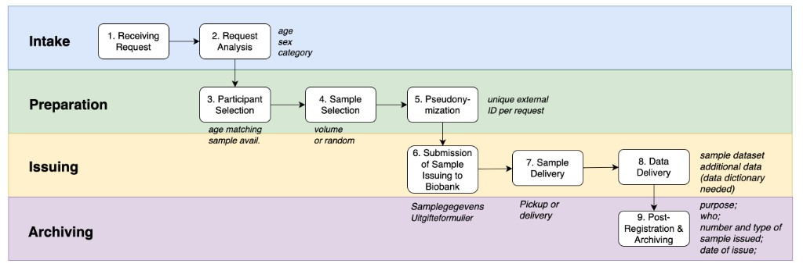

Biosample request workflow¶
End-to-end procedure from research request intake through participant and sample selection, pseudonymization, biobank issuing, delivery, and archiving. Automation and R scripts live in the Sample request task page (github.com/nmcb-fair/sample-request).
Source deck (Jan 2026): biosample-request-workflow-detailed-20260112.pptx
Overview¶

| Phase | Steps | Main actors |
|---|---|---|
| Intake | 1–2 | PI, PM |
| Preparation | 3–5 | PM, Data Manager (DM) |
| Issuing | 6–8 | PM, DM, Biobank, research team |
| Archiving | 9 | PM, DM |
Roles¶
| Role | Responsibility in this workflow |
|---|---|
| Principal Investigator (PI) | Submits the research request (aim, population, data and/or biosamples); signs Uitgifteformulier when required |
| Project Manager (PM) | Logs the request, confirms receipt, finalizes inclusion criteria with PI, coordinates biobank submission and archiving metadata |
| Data Manager (DM) | Feasibility analysis, participant and sample selection, pseudonymization, data delivery, archival datasets |
| Biobank | Locates and containerizes samples after approved issuance request |
| Research team | Sample pickup or receipt |
1. Request intake¶
Step 1 — Receiving request¶
Actors: PI, PM
The PI submits a research request describing:
- Scientific aim
- Target population (e.g. ME/CFS, healthy controls, post-COVID)
- Required data and/or biosamples
The PM logs the request and confirms receipt.
Output: Registered research request.
Step 2 — Feasibility and requirement analysis¶
Actor: DM
The DM analyses feasibility, including:
| Area | Examples |
|---|---|
| Participant characteristics | Age range, sex, participant category (ME/CFS, healthy control, post-COVID, etc.) |
| Matching requirements | Age matching, sex matching |
| Sample requirements | Sample type(s) (e.g. serum, PAXgene RNA, DNA), minimum volume, number of samples per participant |
| Availability | Whether all selected participants must have samples available |
Output: Feasibility summary for PI and PM.
Operational detail: age, sex, and category criteria align with the Request analysis box in the overview figure.
2. Preparation¶
Step 3 — Participant selection¶
Actors: PM, DM
Based on the feasibility analysis:
- Inclusion and exclusion criteria are finalized
- Decisions are recorded on age/sex matching and whether all participants must have available samples
- The DM identifies eligible participants from the database
Output: Final participant list.
Matching: age matching and sample availability (see overview figure).
Step 4 — Sample selection¶
Actor: DM
For each selected participant, the DM:
- Identifies available samples in OpenSpecimen (Amsterdam UMC biobank system)
- Applies rules such as minimum volume, specific visit/timepoint, or random selection when multiple aliquots exist
- Confirms selections meet the request
Output: Final list of selected samples linked to participants (internal IDs).
Reproducible selection is supported by the sample-request repo (track_biobank.Rmd, request templates).
Step 5 — Pseudonymization¶
Actor: DM
- A request-specific external ID (Pseudo ID) is generated
- Each participant receives one unique Pseudo ID per request
- A linkage file maps Participant ID → Pseudo ID (restricted access)
Principle: Pseudo IDs are unique per request and must not link participants across requests.
Output: Pseudonymization linkage file (restricted access).
3. Issuing¶
Step 6 — Submission of sample issuing to biobank¶
Actors: PI, PM, DM, Biobank
The PM and DM prepare and submit:
| Document | Content |
|---|---|
| Samplegegevens | Pseudo ID, Sample ID, sample type |
| Uitgifteformulier | Signed by PI when required |
Upon receipt, the biobank locates and containerizes samples.
Output: Approved sample issuance request at the biobank.
Step 7 — Sample delivery¶
Actors: Biobank, research team
Samples are picked up by the research team or delivered by the biobank. Delivery details should be recorded.
Output: Physical transfer of biosamples.
Step 8 — Data delivery¶
Actor: DM
The DM delivers:
- Sample dataset linking issued samples to Pseudo IDs
- Additional research dataset as requested (e.g. clinical, questionnaire data)
- Optional: data dictionary (new version planned mid-January 2026 in source deck), ReadMe
Output: Final research datasets delivered to the research group.
4. Archiving¶
Step 9 — Post-registration and archiving¶
Actors: PM, DM
Record metadata, including:
- Number and type of samples issued
- Purpose of the request
- Requesting project / PI
- Date of sample pickup or delivery
- Person who collected the samples
Archive:
- Request documentation
- Delivered datasets
- Samplegegevens file
- Pseudonymization linkage file (stored separately with restricted access)
Output: Completed, auditable request record.
Systems and tools¶
| System / asset | Role |
|---|---|
| OpenSpecimen | Sample inventory and exports for selection |
| Biobank | Issuing, storage, Samplegegevens / Uitgifteformulier |
| Sample request (GitHub) | track_biobank.Rmd, templates, pseudonymized exports |
| Research Drive | Request files and archives (per team convention) |
Related¶
- Sample request — R pipeline, inputs, and
run_sample_requestusage - Data request — variable-level data requests (separate from biosamples)
- Multi-centre sample data workflow — inbound samples before they appear in OpenSpecimen
- Workflows overview